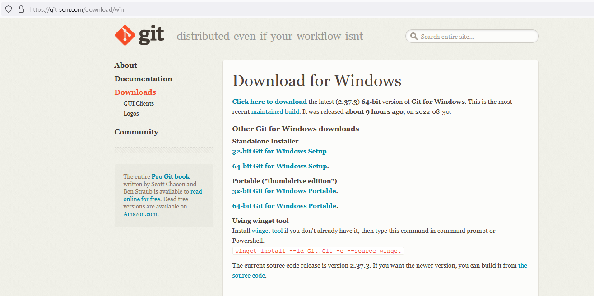
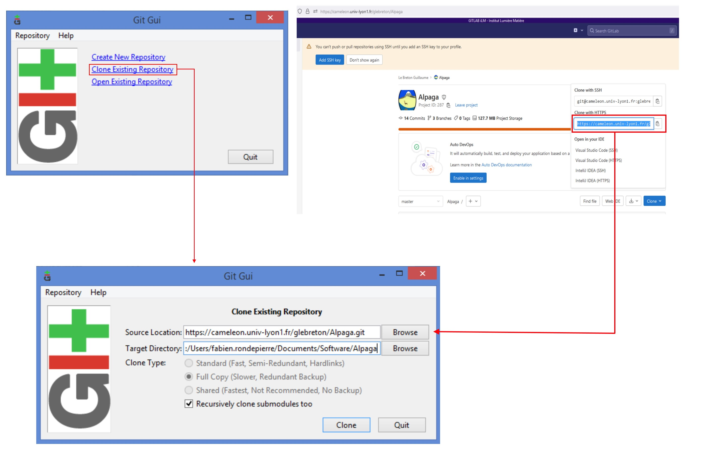
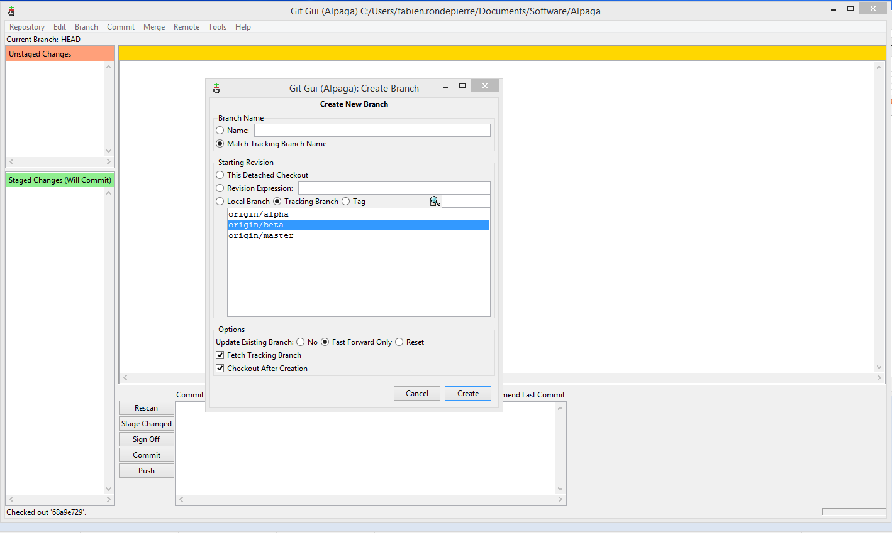

10. For Developpers¶
In this section, we provide some guidance to help developers comtributing to this project. In particular, this code is developed using git because of these multiple contributors. Using the github page, one can proposes update of the code, tutorial or wiki using directly the webpage. However, to modify the package (alpaga.tar.gz) or the online wiki (you are currently reading), compilation must be performed.
Either the github workflow works and you have nothing to do in order to update the package/wiki once you have push something in the master branch, or it fails and you have to perform these part on your computer until you fix the issue.
TEST
10.1. Scratch git guide:¶
In this section, we will see how we can use git to implement new functions, fix some bugs or edit wiki.
Installation :
First of all, we need git on our computer. Most of us are used to use Graphical User Interface (GUI) of git SCM so we are presenting this tool, but feel free to use other software if you’re used to. You can have it here :
{kind=link}
Choose your version of the soft and install it. Once it’s done, you can open git GUI. The first step is to link Alpaga gitlab with a new work repertory. To do so, click clone existing repertory and then copy the clone as shown in the picture, then choose a directory where to put your working version of Alpaga.
{kind=link}
Now we have to import the working branch (usualy Beta branch) into the directory. To do so, click branch / create / then choose option like in the following :
{kind=link}
Well done, you can now contribute to this project !
{kind=link}
How to work together : Pull, Push, Fetch, Flush and other lovely stuff
We recommand to always be sure to have the latest version of the code before doing some modification. This procedure is called Pull and is separated in two :
First called fetch where you download the latest version of the code from gitlab. This ‘download’ is not directly visible on your computer. To do so : [ Remote -> Fetch from -> origin ].
{kind=link}
Second called merge. It will merge the version of Alpaga from gitlab with the version that you have modified. It should conserve your change and implement changes from gitlab. To do so : [ Merge -> Local merge ]. For exemple, if you want to merge the tracking branch Beta with your own Beta branch, select [ Tracking branch -> origin/beta ] .
{kind=link}
Note
You may have some merging issue if you work on a file which is not the latest version. There will be a conflict between your version of the file and the one in gitlab. If you can’t solve this conflict, as a last resort, you should try to save the file in an other folder, redownload the file from gitlab, and then implement your change by hand. We called this process the Flush.
When you have finished your job, in order to add your contribution to the Gitlab, you have to Pull.
First of all, you will scan our change from gitlab with [ Rescan ]. You should now see all your changes in the GUI.

Then you have to valid those changes with [ Stage changed ].

You will commit those changes with [ Commit ]. Don’t forget to put a little message describing what is the purpose of this commit.
Finaly, you can push your commits on gitlab. After that, everyone pulling Alpaga will have your contrubtion !
10.2. How to: compile a new Alpaga version:¶
If you want to develop new functions or modules in Alpaga module, make sure to compile your code into .tar.gz file. To do so, one can use the bash script to_creat_package.sh. For windows users, you just have to open a terminal, then go to the folder where to_creat_package.sh is and execute it like that :
C:\your_path_to_alpaga_folder\Alpaga> .\to_creat_package.sh
When it’s done, your code is compiled and compressed into a .tar.gz file. The bash script will also do a clean install of the new Alpaga module.
10.3. How to: compile the online wiki:¶
After changing .rst file to add the information you want in the wiki, make sure to compile your changes to make it appears in HTML files. To do so, there are some python packages to add before compilation : Sphinx - Sphinxcontrib-bibtex - Recommonmark.
For windows users, you can use :
python -m pip install sphinx
python -m pip install sphinxcontrib-bibtex
python -m pip install recommonmark
You can then compile your wiki with :
C:\your_path_to_alpaga_folder\Alpaga\Doc\Rst> python -m sphinx -b html . ../Html/.
Your changes should now appear in HTML files.
- Release:
1.2
- Date:
Aug 20, 2025